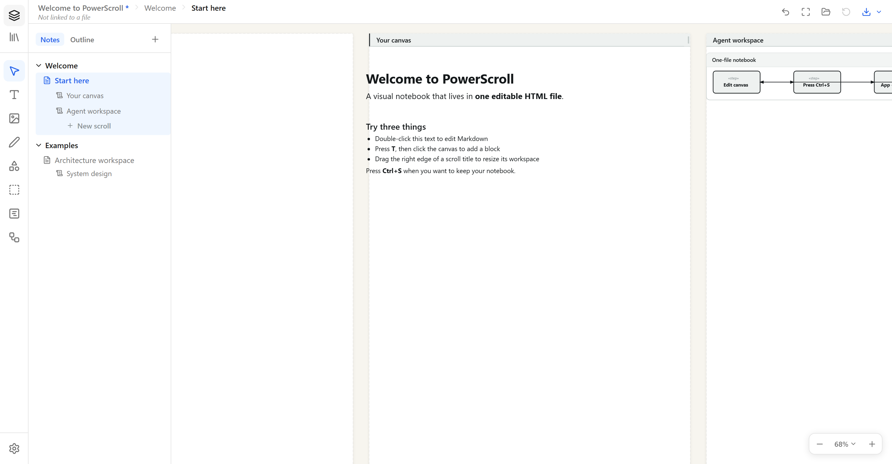
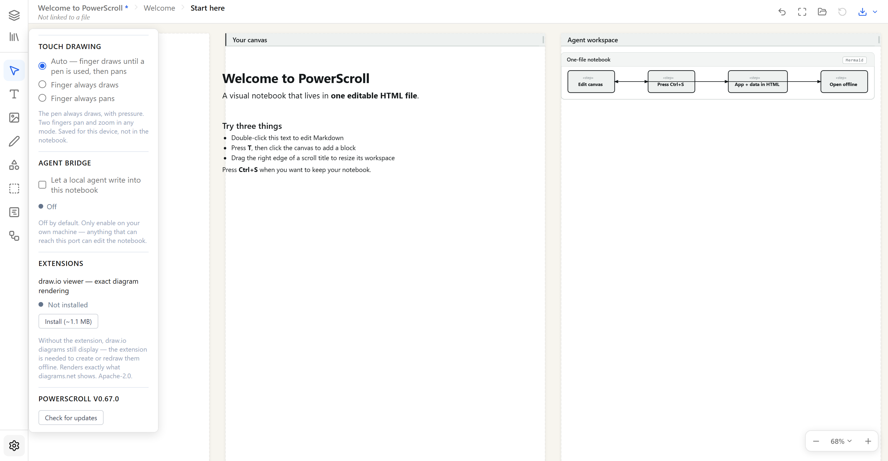

Actually yours
No account, cloud database, or proprietary vault. Your notebook is the file on your disk.
LOCAL-FIRST · OPEN SOURCE · NO ACCOUNT
PowerScroll is a visual notebook that you and your AI agents can edit together. The complete application and all your notes live inside one portable HTML file.
Free under MIT · works offline · Chrome and Edge recommended for direct disk save

No account, cloud database, or proprietary vault. Your notebook is the file on your disk.
Sections and pages outside; markdown, ink, images, shapes, and independent scrolls inside.
A local MCP bridge lets agents work in the visible notebook instead of hiding results in a chat transcript.
THE WHOLE MODEL
Press Ctrl+S and PowerScroll writes the current editor, workspace, images, drawings, and extensions into one self-contained HTML file. Reopen it to continue. Send a copy and the recipient receives an editable notebook—not a flattened export.

A SHARED VISUAL WORKSPACE
Agents can read pages, write markdown, insert images, manage scrolls, and turn PlantUML, Mermaid, SVG, or draw.io into ordinary editable canvas objects.
npm install --global \
https://github.com/CynaCons/PowerScroll/releases/latest/download/powerscroll-mcp.tgz
powerscroll-mcpPRIVACY BY ARCHITECTURE
Normal editing runs in your browser and stores the notebook where you choose. Update checks and optional extensions contact GitHub. The agent bridge is disabled by default and uses a loopback connection on your own machine.
Read the security model →No. The hosted build runs in your browser. Download or save your notebook to keep it.
Yes. PowerScroll preserves the embedded data format, internal links, browser storage, and bridge protocol used by existing PowerNote files.
Chrome and Edge provide direct disk save and autosave through the File System Access API. Firefox and Safari use a download fallback.
Yes. PowerScroll is MIT licensed. The source, release tag, committed standalone build, and SHA-256 release digest are public on GitHub.
NO SIGNUP SCREEN AHEAD